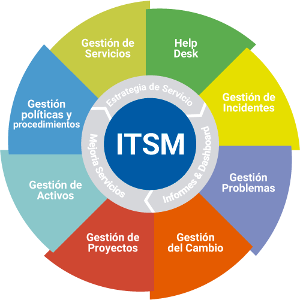

La Gestión de Servicios de Tecnologías de la Información (ITSM, por sus siglas en inglés) constituye un enfoque sistemático para la planificación, entrega, operación y control de servicios de TI en una organización. En lugar de enfocarse únicamente en los aspectos técnicos, ITSM considera los servicios como medios para aportar valor al negocio, buscando siempre la eficiencia, calidad y mejora continua. La implementación de ITSM implica adoptar procesos definidos, estandarizados y monitoreados para asegurar que los servicios de TI cumplan con los objetivos estratégicos de la organización.
Este modelo de gestión considera a los usuarios y al negocio como ejes principales, estableciendo una relación colaborativa donde las necesidades organizacionales son atendidas mediante servicios tecnológicos confiables y documentados. La importancia de ITSM radica en que permite transformar la función de TI en un socio estratégico del negocio, mediante un enfoque orientado a procesos que permite garantizar la continuidad, calidad y trazabilidad de cada servicio brindado.

Dentro del gobierno de TI, ITSM desempeña un rol operativo fundamental. El gobierno de TI abarca el control estratégico, la gestión de riesgos y el cumplimiento normativo, mientras que ITSM se encarga de materializar estas políticas mediante la operación diaria. La implementación adecuada de ITSM requiere del diseño de procesos como la gestión de incidentes, gestión de problemas, gestión de cambios, y un centro de atención al usuario (Service Desk) formalizado y eficaz.
Un caso práctico del uso de ITSM se encuentra en la evaluación del sistema ETLE (Electronic Traffic Law Enforcement) en Indonesia. Este sistema de vigilancia electrónica del tránsito buscaba mejorar la seguridad vial mediante soluciones tecnológicas. Sin embargo, el diagnóstico arrojó una serie de deficiencias que comprometían la eficiencia del servicio. Se detectó que muchos procesos no estaban documentados, los incidentes eran atendidos sin registro formal, y se utilizaban herramientas informales como WhatsApp para comunicarse con los usuarios. Además, existía una dependencia elevada hacia proveedores externos sin acuerdos de nivel de servicio definidos.
El análisis de madurez, basado en COBIT 2019, arrojó que los procesos relacionados con ITSM se encontraban en un nivel 1, es decir, parcialmente alcanzado. Esto reflejaba una implementación incipiente, carente de estandarización, documentación y mecanismos de mejora continua. Para enfrentar estos retos, se propuso establecer procedimientos documentados, definir roles y responsabilidades mediante una matriz RACI, implementar sistemas de registro como mesas de ayuda con herramientas de ticketing y aplicar controles basados en indicadores clave de desempeño (KPI).
Entre los principales problemas identificados en el sistema ETLE se encuentran la falta de personal capacitado, la ausencia de una gestión centralizada del equipamiento tecnológico, el uso de procedimientos manuales y la falta de trazabilidad de los incidentes y cambios. A través del enfoque ITSM, se propuso una reestructuración completa del modelo de prestación de servicios tecnológicos del sistema, fortaleciendo su resiliencia, disponibilidad y alineación con los objetivos del gobierno electrónico en Indonesia.
Rol estratégico del ITSM
ITSM transforma el área de tecnologías de la información en un socio estratégico del negocio. A través de procesos bien definidos, asegura que los servicios de TI estén alineados con los objetivos organizacionales, se entreguen con calidad y se mejoren continuamente, maximizando así el valor aportado.